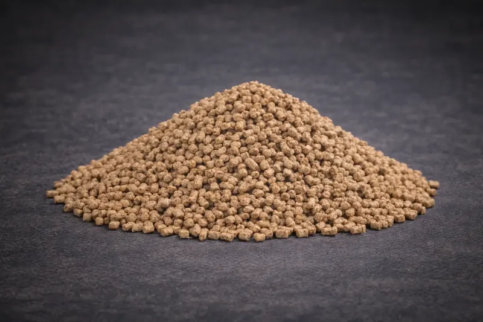

Корм для прудовой рыбы
Корм для рыб BodaPro (Pond Koi Grower), 3,00 mm
Цена и наличие
- 0,5 кг33,6 BYN / шт.В наличии
- 1,5 кг80,6 BYN / шт.В наличии
- 1 кг (от 5 кг)40,3 BYN / шт.В наличии
Данные на 23.11.2026.
Характеристики
- По плавучести
- плавающий
Описание
BodaPro Pond Koi Grower — это высококачественный специализированный корм в виде гранул диаметром 3 мм, предназначенный для декоративных рыб в прудах.
Корм для рыб BodaPro Pond Koi Grower, гранула 3,00 мм предназначен для кормления карпов кои и других декоративных прудовых рыб в период активного роста. Размер гранулы 3 мм подходит для подрастающих кои и рыб среднего размера, которым уже требуется более крупный корм, чем стартовые мелкие фракции. Такой размер удобно захватывается рыбой и подходит для регулярного кормления в декоративных прудах и других искусственных водоемах. BodaPro Pond Koi Grower можно использовать как основной корм в период, когда рыба активно питается и набирает массу. Количество корма следует подбирать с учетом размера кои, температуры воды, количества рыбы в пруду и ее аппетита. Корм лучше давать небольшими порциями, чтобы рыба успевала его съедать без значительных остатков. Если после кормления часть гранул остается в воде, следующую порцию стоит уменьшить. Корм BodaPro для кои с гранулой 3 мм подойдет владельцам декоративных прудов, которым нужен удобный корм для подрастающей рыбы. По мере увеличения размера карпов можно постепенно переходить на более крупную гранулу. Правильно подобранная фракция облегчает кормление, позволяет контролировать расход корма и помогает организовать стабильный рацион для кои в течение сезона активного питания.
Состав
Состав: проростки пшеницы, рыбная мука, растительное и животное масло/жир, мясокостная мука, а также сбалансированный комплекс витаминов, минералов и аминокислот.